冬眠からのめざめ
春、田んぼに水が張られた直後に冬眠から目覚めます。
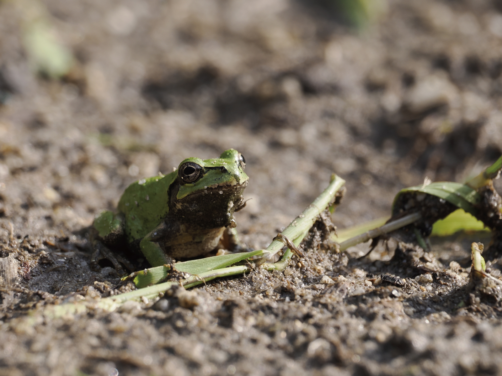
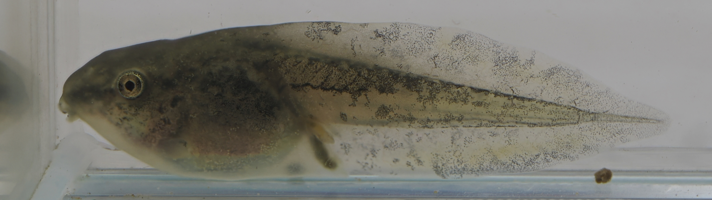
おたまの暮らしとフィギュア
日本全国に広く分布する3～4 cmのカエルです。 普段は草木の上で生活をして、春に田んぼで繁殖します。

春から夏にかけて、田んぼなどの浅い水域でよく見られます。 平野部の田んぼではトノサマガエルやダルマガエル、ツチガエルのオタマジャクシと、 山間部ではシュレーゲルアオガエルと一緒に見られることが多く、 同じ環境の中で混在している様子を観察できます。
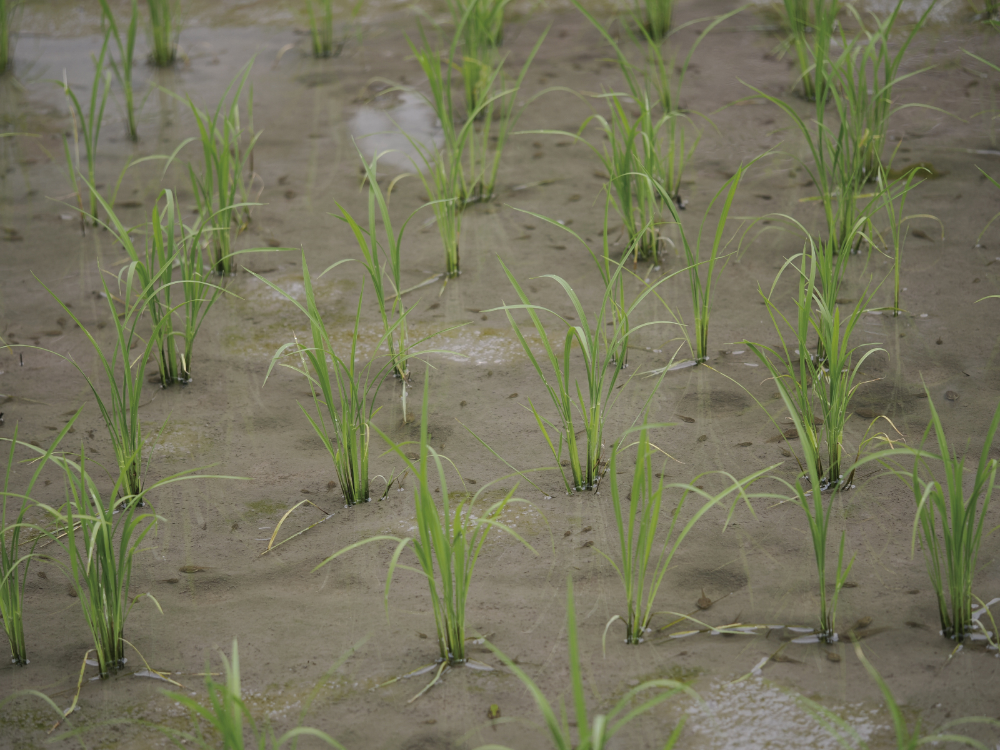
アマガエルのオタマジャクシは、ほかの種類に比べて際立った特徴があり、区別しやすいです。
ここでは後肢が発達する頃のオタマジャクシの形態的特徴（形と色）を、実物のモデル個体とフィギュアを並べて紹介します。フィギュアは5倍スケールで制作、約 20 cmのサイズなので、じっくりと手に取っていろんな角度から観察ができます。
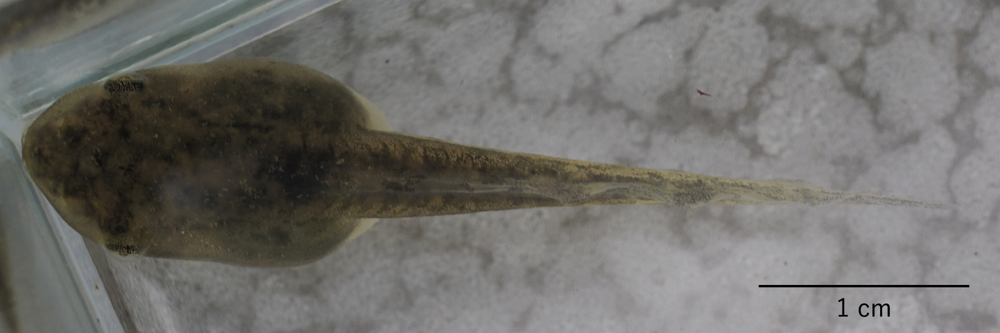
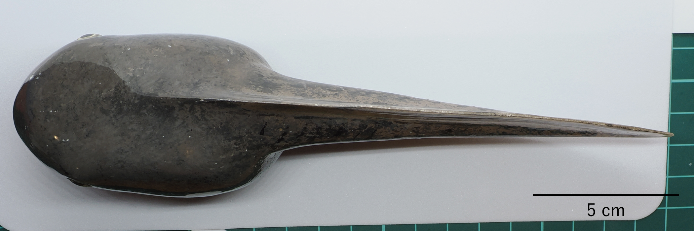
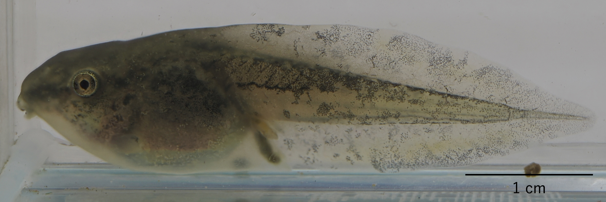
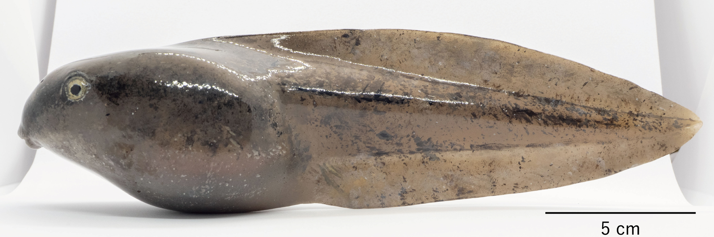
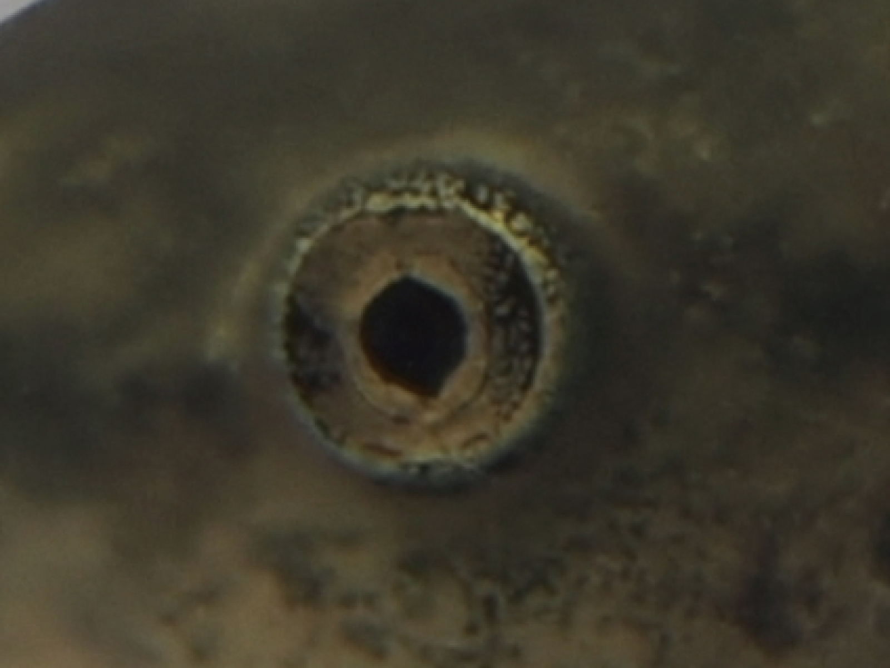


鼻の穴は、ほかの種類に比べて大きい。


胴部から尻尾の付け根にかけての筋肉


えらはやや下向きについている

えらはやや下向きについている


えらはやや下向きについている

えらはやや下向きについている
アマガエルは、繁殖・産卵から成体に戻るまで、いくつもの明確な段階を経て成長します。 ここでは、実際の観察に基づき、成長の流れが写真だけでも追えるように並べています。
春、田んぼに水が張られた直後に冬眠から目覚めます。

おもに夜に、水辺のお気に入りの場所で、オスが盛んに鳴いてメスを呼びます。春から夏まで続きます。
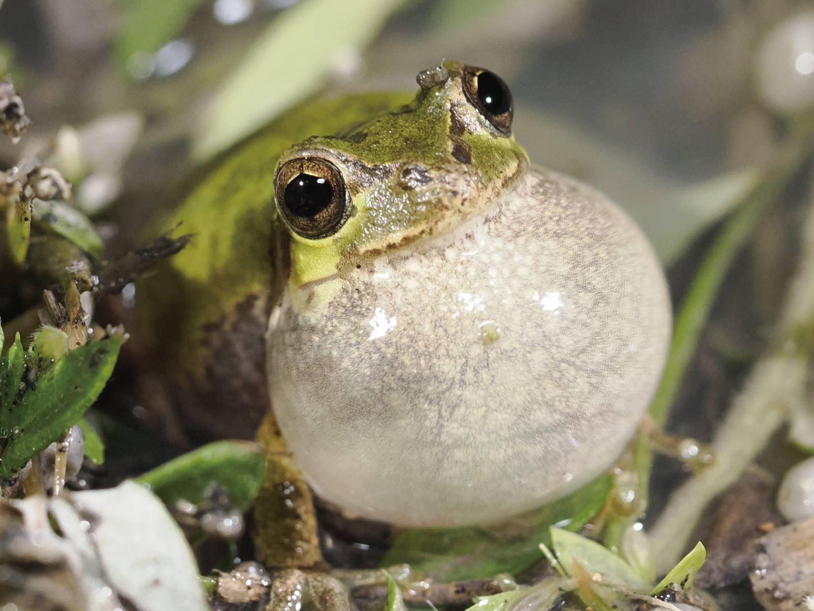
メスがお気に入りのオスに近づいた後、さらに品定めをしてOKであれば、オスがメスに乗っかり、カップルが成立します。
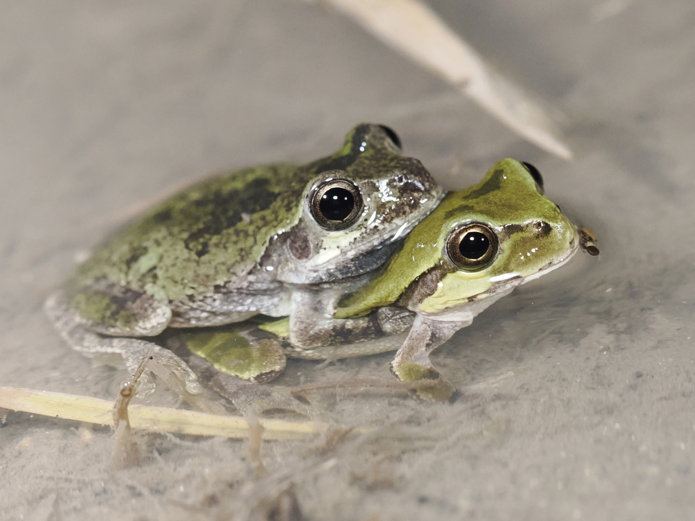
抱きついたままメスが産卵場所に移動して、お尻を水面に出すように産卵します。一度に3～5個くらいで、少しずつ場所を変えながら何度も産卵します。
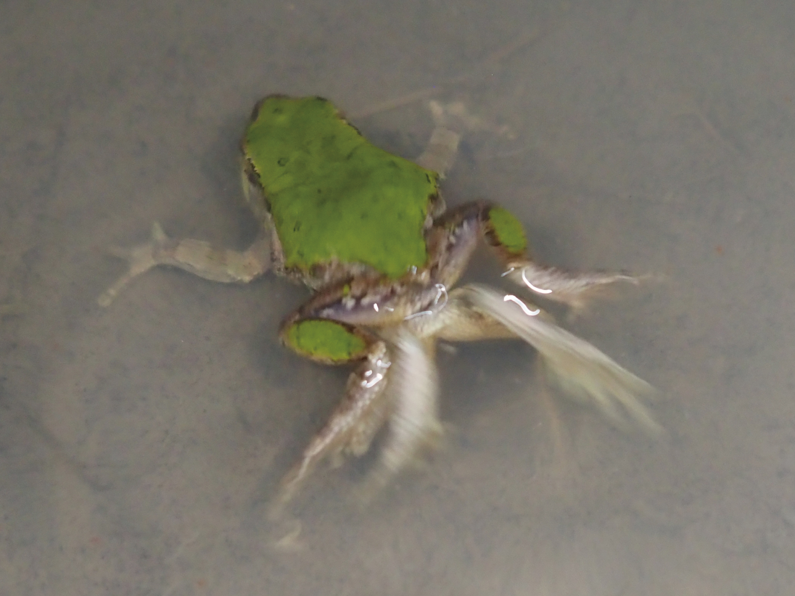
卵は近くの水草や稲にくっつくか、水底に落ちていきます。だいたい直径 1.0～1.5 mm です。
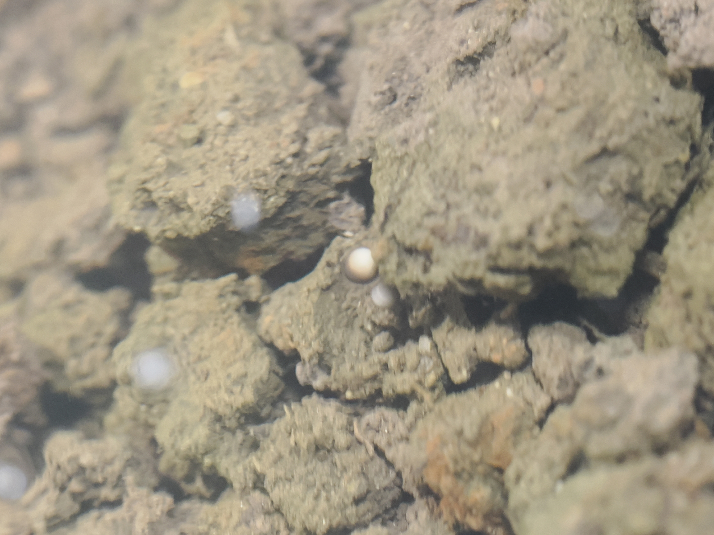
数日で卵からオタマジャクシになり、日に日に大きくなります。写真は産卵から10日くらいの、2 cm 弱くらいのオタマジャクシです。
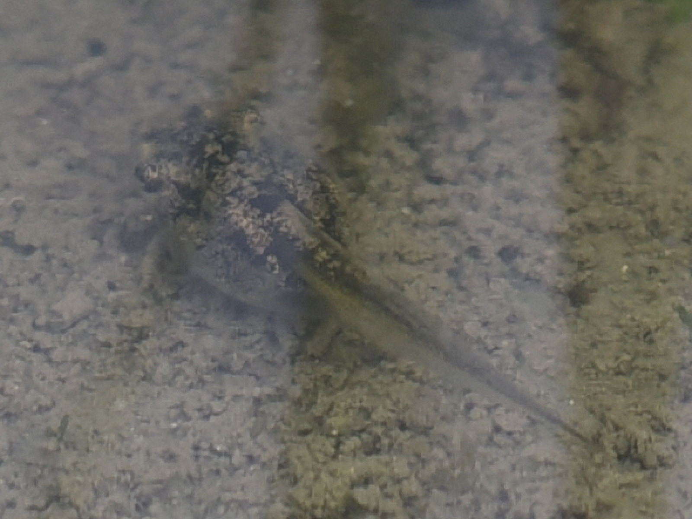
産卵から3週間くらいで、だいたい最大サイズのオタマになります。フィギュア制作の対象にしている、後肢が発達する前のオタマジャクシです。
産卵から4週間くらいで、後肢が発達してきます。変態の第一段階です。
後肢が生えたオタマジャクシ
本段階の写真は現在準備中です。
観察は複数回行っていますが、撮影記録が未整備のため、
今後の観察で追加予定です。
産卵から4週間くらいで、体の内側で作られた前肢が、突然外に飛び出してきます。変態の第2段階で、尻尾はまだ長く、口も横に広がっていない状態ですが、アマガエルの模様がはっきりと見えます。

産卵から6週間弱くらいで、尻尾が吸収されて、黒い歯が抜けて、ほとんどカエルっぽくなります。が、よく見ると口がまだ広がりきっておらず、このころはまだ餌を食べません。

産卵から6週間くらいで、尻尾が完全に吸収されて、口も広がって、完全に陸上生活になります。この個体は少しだけ顔（吻）の形がオタマっぽいです。

変態が終わって、餌を食べ始めます。冬になるまでたくさん虫などの餌を食べて成長します。

秋、ほとんど大人と同じサイズのカエルまで成長して、冬眠に備えます。他のカエルよりもやや早めに冬眠に入る感じです。